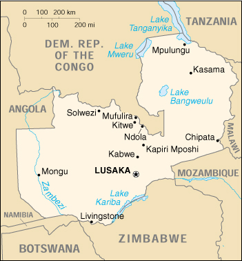

![[Country Flag of Zambia]](../flags/za-lgflag.jpg)
| Zambia |
|
         |  | |
| Introduction |
Background: The territory of Northern Rhodesia was administered by the South Africa Company from 1891 until takeover by the UK in 1923. During the 1920s and 1930s, advances in mining spurred development and immigration. The name was changed to Zambia upon independence in 1964. In the 1980s and 1990s, declining copper prices and a prolonged drought hurt the economy. Elections in 1991 brought an end to one-party rule, but the subsequent vote in 1996 saw blatant harassment of opposition parties.
| Geography |
Location: Southern Africa, east of Angola
Geographic coordinates: 15 00 S, 30 00 E
Map references: Africa
Area:
total:
752,614 sq km
land:
740,724 sq km
water:
11,890 sq km
Area - comparative: slightly larger than Texas
Land boundaries:
total:
5,664 km
border countries:
Angola 1,110 km, Democratic Republic of the Congo 1,930 km, Malawi 837 km, Mozambique 419 km, Namibia 233 km, Tanzania 338 km, Zimbabwe 797 km
Coastline: 0 km (landlocked)
Maritime claims: none (landlocked)
Climate: tropical; modified by altitude; rainy season (October to April)
Terrain: mostly high plateau with some hills and mountains
Elevation extremes:
lowest point:
Zambezi river 329 m
highest point:
unnamed location in Mafinga Hills 2,301 m
Natural resources: copper, cobalt, zinc, lead, coal, emeralds, gold, silver, uranium, hydropower
Land use:
arable land:
7%
permanent crops:
0%
permanent pastures:
40%
forests and woodland:
39%
other:
14% (1993 est.)
Irrigated land: 460 sq km (1993 est.)
Natural hazards: tropical storms (November to April)
Environment - current issues: air pollution and resulting acid rain in the mineral extraction and refining region; poaching seriously threatens rhinoceros and elephant populations; deforestation; soil erosion; desertification; lack of adequate water treatment presents human health risks
Environment - international agreements:
party to:
Biodiversity, Climate Change, Desertification, Endangered Species, Hazardous Wastes, Law of the Sea, Nuclear Test Ban, Ozone Layer Protection, Wetlands
signed, but not ratified:
Climate Change-Kyoto Protocol
Geography - note: landlocked
| People |
Population:
9,582,418
note:
estimates for this country explicitly take into account the effects of excess mortality due to AIDS; this can result in lower life expectancy, higher infant mortality and death rates, lower population and growth rates, and changes in the distribution of population by age and sex than would otherwise be expected (July 2000 est.)
Age structure:
0-14 years:
48% (male 2,290,559; female 2,270,945)
15-64 years:
50% (male 2,369,317; female 2,413,070)
65 years and over:
2% (male 105,443; female 133,084) (2000 est.)
Population growth rate: 1.95% (2000 est.)
Birth rate: 41.9 births/1,000 population (2000 est.)
Death rate: 22.08 deaths/1,000 population (2000 est.)
Net migration rate: -0.33 migrant(s)/1,000 population (2000 est.)
Sex ratio:
at birth:
1.03 male(s)/female
under 15 years:
1.01 male(s)/female
15-64 years:
0.98 male(s)/female
65 years and over:
0.79 male(s)/female
total population:
0.99 male(s)/female (2000 est.)
Infant mortality rate: 92.38 deaths/1,000 live births (2000 est.)
Life expectancy at birth:
total population:
37.24 years
male:
37.08 years
female:
37.41 years (2000 est.)
Total fertility rate: 5.62 children born/woman (2000 est.)
Nationality:
noun:
Zambian(s)
adjective:
Zambian
Ethnic groups: African 98.7%, European 1.1%, other 0.2%
Religions: Christian 50%-75%, Muslim and Hindu 24%-49%, indigenous beliefs 1%
Languages: English (official), major vernaculars - Bemba, Kaonda, Lozi, Lunda, Luvale, Nyanja, Tonga, and about 70 other indigenous languages
Literacy:
definition:
age 15 and over can read and write English
total population:
78.2%
male:
85.6%
female:
71.3% (1995 est.)
| Government |
Country name:
conventional long form:
Republic of Zambia
conventional short form:
Zambia
former:
Northern Rhodesia
Data code: ZA
Government type: republic
Capital: Lusaka
Administrative divisions: 9 provinces; Central, Copperbelt, Eastern, Luapula, Lusaka, Northern, North-Western, Southern, Western
Independence: 24 October 1964 (from UK)
National holiday: Independence Day, 24 October (1964)
Constitution: 2 August 1991
Legal system: based on English common law and customary law; judicial review of legislative acts in an ad hoc constitutional council; has not accepted compulsory ICJ jurisdiction
Suffrage: 18 years of age; universal
Executive branch:
chief of state:
President Frederick CHILUBA (since 2 November 1991); Vice President Christon TEMBO (since 2 December 1997); note - the president is both the chief of state and head of government
head of government:
President Frederick CHILUBA (since 2 November 1991); Vice President Christon TEMBO (since 2 December 1997); note - the president is both the chief of state and head of government
cabinet:
Cabinet appointed by the president from among the members of the National Assembly
elections:
president elected by popular vote for a five-year term; election last held 18 November 1996 (next to be held NA October 2001); vice president appointed by the president
election results:
Frederick CHILUBA reelected president; percent of vote - Frederick CHILUBA 72.5%, Dean MUNGO'MBA 12.6%, Humphrey MULEMBA 7%, Akashambatwa LEWANIKA 4.7%, Chama CHAKOMBOKA 3.2%
Legislative branch:
unicameral National Assembly (150 seats; members are elected by popular vote to serve five-year terms)
elections:
last held 18 November 1996 (next to be held NA October 2001)
election results:
percent of vote by party - NA; seats by party - MMD 131, NP 5, Zadeco 2, AZ 2, independents 10
Judicial branch: Supreme Court, justices are appointed by the president
Political parties and leaders: Agenda for Zambia or AZ [Akashambatwa LEWANIKA]; Labor Party or LP [Chibiza MFUNI]; Liberal Progressive Front or LPF [Roger CHONGWE, president]; Movement for Democratic Process or MDP [Chama CHAKOM BOKA]; Movement for Multiparty Democracy or MMD [Frederick CHILUBA]; National Party or NP [Daniel LISULO]; United National Independence Party or UNIP [Kenneth KAUNDA]; United Party for National Development or UPND [Anderson MAZOKA]; Zambia Alliance for Progress or ZAP [Ben KAPILA]; Zambia Democratic Congress or Zadeco [Azwell BANDA]
International organization participation: ACP, AfDB, C, CCC, ECA, FAO, G-19, G-77, IAEA, IBRD, ICAO, ICFTU, ICRM, IDA, IFAD, IFC, IFRCS, ILO, IMF, Intelsat, Interpol, IOC, IOM, ITU, MONUC, NAM, OAU, OPCW, SADC, UN, UNAMSIL, UNCTAD, UNESCO, UNIDO, UNMIK, UPU, WCL, WHO, WIPO, WMO, WToO, WTrO
Diplomatic representation in the US:
chief of mission:
Ambassador Dunstan Weston KAMANA
chancery:
2419 Massachusetts Avenue NW, Washington, DC 20008
telephone:
[1] (202) 265-9717 through 9719
FAX:
[1] (202) 332-0826
Diplomatic representation from the US:
chief of mission:
Ambassador David DUNN
embassy:
corner of Independence and United Nations Avenues
mailing address:
P. O. Box 31617, Lusaka
telephone:
[260] (1) 250-955, 252-230
FAX:
[260] (1) 252-225
Flag description: green with a panel of three vertical bands of red (hoist side), black, and orange below a soaring orange eagle, on the outer edge of the flag
| Economy |
Economy - overview: Despite progress in privatization and budgetary reform, Zambia's economy has a long way to go. The recent privatization of the huge government-owned Zambia Consolidated Copper Mines (ZCCM) should greatly improve Zambia's prospects for international debt relief, as the government will no longer have to cover the mammoth losses generated by that sector. Inflation and unemployment rates remain high, however.
GDP: purchasing power parity - $8.5 billion (1999 est.)
GDP - real growth rate: 1.5% (1999 est.)
GDP - per capita: purchasing power parity - $880 (1999 est.)
GDP - composition by sector:
agriculture:
20.6%
industry:
30.6%
services:
48.8% (1998 est.)
Population below poverty line: 86% (1993 est.)
Household income or consumption by percentage share:
lowest 10%:
1.5%
highest 10%:
31.3% (1993)
Inflation rate (consumer prices): 27.4% (1999 est.)
Labor force: 3.4 million
Labor force - by occupation: agriculture 85%, industry 6%, services 9%
Unemployment rate: 25% (1998)
Budget:
revenues:
$606 million
expenditures:
$547 million, including capital expenditures of $61 million (1998 est.)
Industries: copper mining and processing, construction, foodstuffs, beverages, chemicals, textiles, fertilizer
Industrial production growth rate: -4% (1998)
Electricity - production: 8.16 billion kWh (1998)
Electricity - production by source:
fossil fuel:
0.49%
hydro:
99.51%
nuclear:
0%
other:
0% (1998)
Electricity - consumption: 6.419 billion kWh (1998)
Electricity - exports: 1.2 billion kWh (1998)
Electricity - imports: 30 million kWh (1998)
Agriculture - products: corn, sorghum, rice, peanuts, sunflower seed, tobacco, cotton, sugarcane, cassava (tapioca); cattle, goats, pigs, poultry, beef, pork, poultry, milk, eggs, hides; coffee
Exports: $900 million (f.o.b., 1999 est.)
Exports - commodities: copper, cobalt, electricity, tobacco
Exports - partners: Japan, Saudi Arabia, India, Thailand, South Africa, US, Malaysia (1997)
Imports: $1.15 billion (f.o.b., 1999 est.)
Imports - commodities: machinery, transportation equipment, foodstuffs, fuels, petroleum products, electricity, fertilizer
Imports - partners: South Africa 48%, Saudi Arabia, UK, Zimbabwe (1997)
Debt - external: $6.7 billion (1998 est.)
Economic aid - recipient: $1.99 billion (1995)
Currency: 1 Zambian kwacha (ZK) = 100 ngwee
Exchange rates: Zambian kwacha (ZK) per US$1 - 2,661.82 (January 2000), 2,388.02 (1999), 1,862.07 (1998), 1,314.50 (1997), 1,207.90 (1996), 864.12 (1995)
Fiscal year: calendar year
| Communications |
Telephones - main lines in use: 77,935 (in addition there are about 40,000 fixed telephones in wireless local loop connections) (1997)
Telephones - mobile cellular: 6,000 (1998)
Telephone system:
facilities are among the best in Sub-Saharan Africa
domestic:
high-capacity microwave radio relay connects most larger towns and cities; several cellular telephone services in operation; Internet service is widely available; very small aperature terminal (VSAT) networks are operated by private firms
international:
satellite earth stations - 2 Intelsat (1 Indian Ocean and 1 Atlantic Ocean)
Radio broadcast stations: AM 19, FM 5, shortwave 4 (1998)
Radios: 1.03 million (1997)
Television broadcast stations: 9 (1997)
Televisions: 277,000 (1997)
Internet Service Providers (ISPs): 3 (1999)
| Transportation |
Railways:
total:
2,164 km (1995)
narrow gauge:
2,164 km 1.067-m gauge (13 km double track)
note:
the total includes 891 km of the Tanzania-Zambia Railway Authority (TAZARA), which operates 1,860 km of 1.067-m narrow gauge track between Dar es Salaam and Kapiri Mposhi where it connects to the Zambia Railways system; TAZARA is not a part of Zambia Railways
Highways:
total:
66,781 km
paved:
NA km
unpaved:
NA km (1997 est.)
Waterways: 2,250 km, including Zambezi and Luapula rivers, Lake Tanganyika
Pipelines: crude oil 1,724 km
Ports and harbors: Mpulungu
Airports: 112 (1999 est.)
Airports - with paved runways:
total:
12
over 3,047 m:
1
2,438 to 3,047 m:
3
1,524 to 2,437 m:
5
914 to 1,523 m:
2
under 914 m:
1 (1999 est.)
Airports - with unpaved runways:
total:
100
2,438 to 3,047 m:
1
1,524 to 2,437 m:
2
914 to 1,523 m:
67
under 914 m:
30 (1999 est.)
| Military |
Military branches: Army, Air Force, National Service, police
Military manpower - availability:
males age 15-49:
2,179,563 (2000 est.)
Military manpower - fit for military service:
males age 15-49:
1,157,479 (2000 est.)
Military expenditures - dollar figure: $76 million (FY97)
Military expenditures - percent of GDP: 1.8% (FY97)
| Transnational Issues |
Illicit drugs: transshipment point for methaqualone, heroin, and cocaine bound for Southern Africa and Europe; regional money-laundering center